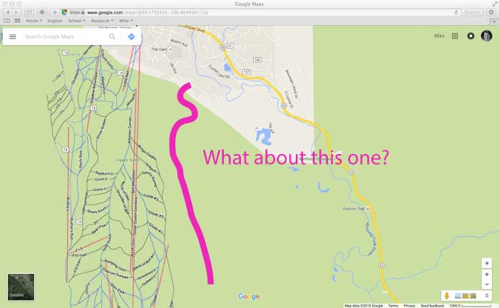
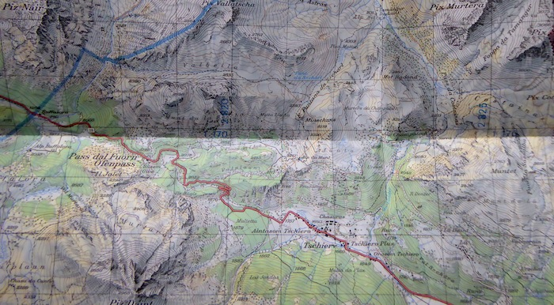

I spend time outdoors climbing, hiking and running. When researching a new area or trying to find a new spot to explore, I've often wished there was a Google Maps equivalent for trails. I also think it's incredible what OpenStreepMap has accomlished as an open source project - it's really a viable alternative to Google Maps in many cases. That's why I started building Open Trail Map - a site that allows you to explore trails anywhere in the world through a simple and intuitive interface.
Google Maps is great for getting directions, planning a day in a new city or even getting a feel for a place using Street View or the geo-tagged photos. And the user interface is great. (Although switching to terrain view has become less obvious.) But when you want to leave the pavement behind, Google Maps doesn't help as much. You may find the trial you're looking for, but many smaller trails are missing and very little information is provided.

For detail and completeness, nothing beats a topographic map, like this beauty from Switzerland:

But to explore new areas or get a quick overview, the web is an excellent medium. In fact, Switzerland has made serious progress getting topographic data online, but most countries aren't even close. Of course, there is plenty of hiking and trail information available online (see for example: allTrails, summitpost.org or Trail Run Project), but they offer an exerience analagous to a guidebook: lots of detail, descriptions, and opinions spread across many pages. If you want a web equivalent of a topo map, you're out of luck (unless you live in Switzerland!). To help change that, I started building Open Trail Map. Here is what I had in mind:
To make an online trail map, we need trail data and fortunately OpenStreepMap already contains data on lots of trails. (Many are still missing, but more on that later.) There are also open source web mapping frameworks that make it easy to build an interactive online map. I used Leaflet. The bulk of this project involved stitching together these various components into a working application. Leaflet provides the interactive map interface. Mapbox provides the base imagery, courtesy of OpenStreetMap. The trail data is loaded from Overpass, the OpenStreetMap API, and Google Maps Javascript API is used to get trail elevations and search for new locations. All of the code is available on Github: github.com/mikeskaug/OpenTrailMap.